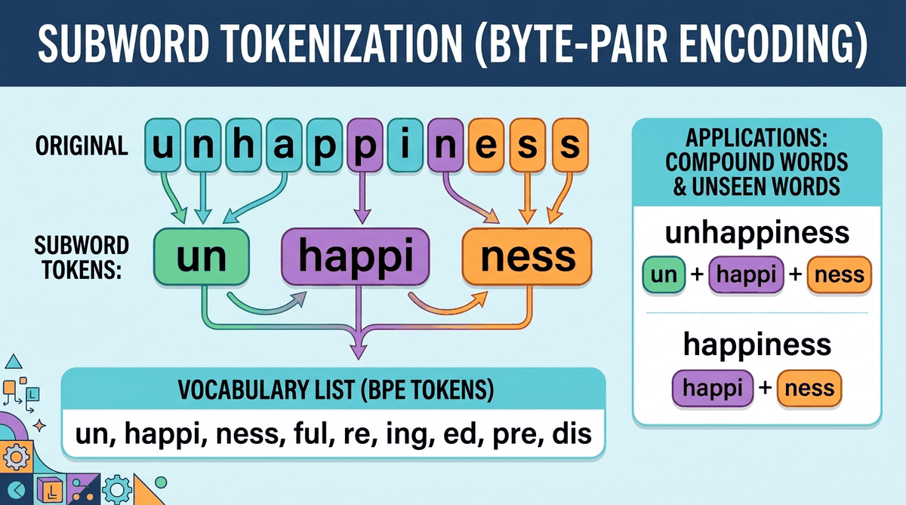

Before a language model can process a single word, it must first decide what a "word" even means. Tokenization is the gateway between raw text and the numerical world of neural networks, and the choices made at this stage ripple through every aspect of model behavior: the languages it handles well, the cost of running it, the errors it makes, and the size of its context window.
This chapter starts by building intuition for why tokenization matters so much, exploring the fundamental tradeoff between vocabulary size and sequence length. We then take a deep dive into the algorithms that power modern tokenizers: Byte Pair Encoding, WordPiece, Unigram, and their byte-level variants. Along the way, you will implement BPE from scratch and compare tokenizers across languages and modalities. Finally, we examine practical concerns: special tokens, chat templates, multilingual fertility, multimodal tokenization, and how tokenization directly impacts your API bill.
Who: An ML engineer at a mid-size e-commerce company building a product search feature powered by GPT-4.
Situation: The team was sending full product descriptions (titles, specs, reviews) to the API for semantic search reranking.
Problem: Monthly API costs hit $14,000 in the first week of production, roughly 5x the projected budget.
Dilemma: They could truncate product descriptions (losing context) or find a way to reduce token counts without losing information quality.
Decision: They analyzed their token usage with tiktoken, discovered that HTML markup and repeated boilerplate were consuming 40% of tokens, and built a preprocessing pipeline to strip formatting before tokenization.
How: A simple text-cleaning step removed HTML tags, normalized whitespace, and deduplicated repeated specs. They also switched from sending raw reviews to sending pre-summarized snippets.
Result: Token usage dropped by 58%, bringing monthly costs to $5,800 while search quality actually improved by 3% (measured by click-through rate) because the model received cleaner input.
Lesson: Understanding tokenization is not just an academic exercise; it directly impacts your infrastructure costs. Always profile your token usage before scaling to production.
Who: A localization team at a SaaS company deploying a multilingual chatbot across 12 markets.
Situation: The chatbot performed well in English and Spanish but generated noticeably lower-quality responses for Korean and Thai users.
Problem: Korean queries consumed 3x more tokens than equivalent English queries, causing the model to hit its context window limit and truncate conversation history.
Dilemma: They could increase the max token limit (raising costs), summarize conversation history more aggressively (losing nuance), or switch to a model with better multilingual tokenization.
Decision: They measured tokenizer fertility across all 12 languages and switched from a model with an English-centric tokenizer to one trained with a more balanced multilingual vocabulary.
How: They benchmarked three models using a standardized test set of 500 queries per language, comparing both token counts and response quality scores.
Result: Korean token counts dropped by 2.1x, conversation history fit within context limits, and Korean customer satisfaction scores rose from 3.2 to 4.1 out of 5.
Lesson: Tokenizer fertility varies dramatically across languages. Always test your tokenizer on representative samples from every target language before committing to a model.
Who: A research engineer at a developer tools startup training a code completion model.
Situation: Their model struggled with Python indentation, frequently generating incorrect whitespace that broke code syntax.
Problem: The default tokenizer treated spaces individually, so a 4-space indent was four separate tokens. The model had to "count" spaces correctly at every indentation level during sequence processing, and it frequently got it wrong.
Dilemma: They could post-process the output to fix indentation (brittle and slow), retrain the full model (expensive), or retrain just the tokenizer with indentation-aware merge rules.
Decision: They retrained their BPE tokenizer on a code-heavy corpus, ensuring that common whitespace patterns (2-space, 4-space, 8-space indents) merged into single tokens early in the merge sequence.
How: They curated a training corpus of 50GB of well-formatted Python and JavaScript, ran BPE training with a 50,000-token vocabulary, and verified that indentation patterns appeared in the first 500 merges.
Result: Indentation errors in generated code dropped by 73%, and the model also became 15% faster at inference because code sequences were shorter in token count.
Lesson: The tokenizer training corpus shapes what patterns the model finds "easy." Domain-specific tokenizer training can solve problems that no amount of model fine-tuning can fix.
Who: A backend developer integrating a fine-tuned LLaMA model into a customer support pipeline.
Situation: The model was fine-tuned with a specific chat template using <|user|> and <|assistant|> special tokens, and it worked perfectly in testing.
Problem: In production, the model occasionally produced garbled output, repeating fragments of the system prompt or responding as if it were the user.
Dilemma: The issue was intermittent and hard to reproduce. They could add output filtering (masking symptoms), roll back to the base model (losing fine-tuning gains), or debug the tokenization pipeline.
Decision: They instrumented the tokenization step and discovered that their API gateway was HTML-encoding the special tokens before they reached the tokenizer, turning <|user|> into literal text instead of a special token ID.
How: They added a dedicated pre-tokenization step that applied the chat template server-side, before any text escaping, ensuring special tokens were injected as token IDs rather than raw strings.
Result: Garbled outputs dropped to zero, and average response quality scores returned to fine-tuning benchmark levels within 24 hours of the fix.
Lesson: Special tokens must be handled at the token ID level, not the string level. Any text transformation between your prompt and the tokenizer can silently break the chat template.
In the next section, Section 2.1: Why Tokenization Matters, we explore why tokenization choices matter so deeply for model performance, vocabulary efficiency, and multilingual coverage.
Gage, P. (1994). "A New Algorithm for Data Compression." C Users Journal, 12(2), 23–38. Wikipedia: Byte Pair Encoding
The original BPE algorithm for data compression, later adapted by Sennrich et al. for subword tokenization in NLP.
Sennrich, R., Haddow, B., & Birch, A. (2016). "Neural Machine Translation of Rare Words with Subword Units." ACL 2016. arxiv.org/abs/1508.07909
Applies BPE to machine translation, demonstrating that subword tokenization elegantly handles rare and compound words.
Kudo, T. (2018). "Subword Regularization: Improving Neural Network Translation Models with Multiple Subword Candidates." ACL 2018. arxiv.org/abs/1804.10959
Introduces the Unigram language model tokenizer and subword regularization, showing that sampling multiple segmentations improves robustness.
Schuster, M. & Nakajima, K. (2012). "Japanese and Korean Voice Search." IEEE ICASSP 2012. doi.org/10.1109/ICASSP.2012.6289079
Introduces the WordPiece algorithm used in BERT and many Google models for vocabulary construction.
Xue, L. et al. (2022). "ByT5: Towards a Token-Free Future with Pre-trained Byte-to-Byte Models." TACL, 10, 291–306. arxiv.org/abs/2105.13626
Explores tokenizer-free models that operate directly on UTF-8 bytes, trading longer sequences for elimination of vocabulary-related biases.
Yu, L. et al. (2023). "MEGABYTE: Predicting Million-Byte Sequences with Multiscale Transformers." NeurIPS 2023. arxiv.org/abs/2305.07185
Proposes a multi-scale architecture for byte-level modeling, enabling efficient processing of very long byte sequences.
Jurafsky, D. & Martin, J. H. (2024). Speech and Language Processing (3rd ed. draft), Chapter 2: Regular Expressions, Text Normalization, Edit Distance. web.stanford.edu/~jurafsky/slp3/2.pdf
Covers text normalization, word segmentation, and the linguistic foundations of tokenization in an accessible format.
Kudo, T. & Richardson, J. (2018). "SentencePiece: A simple and language independent subword tokenizer and detokenizer for Neural Text Processing." EMNLP 2018. arxiv.org/abs/1808.06226
Describes the SentencePiece library that implements BPE and Unigram tokenization in a language-agnostic manner, used by many modern LLMs.
Hugging Face Tokenizers. github.com/huggingface/tokenizers
A fast, Rust-backed tokenizer library supporting BPE, WordPiece, and Unigram, with Python bindings and integration into the Transformers ecosystem.
tiktoken: OpenAI's fast BPE tokenizer. github.com/openai/tiktoken
OpenAI's open-source BPE tokenizer used by GPT-3.5 and GPT-4, useful for estimating token counts and API costs.
SentencePiece. github.com/google/sentencepiece
Google's unsupervised text tokenizer supporting BPE and Unigram models, used in T5, LLaMA, and many multilingual models.